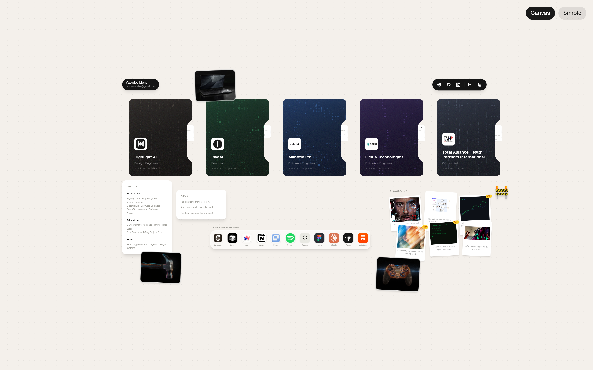
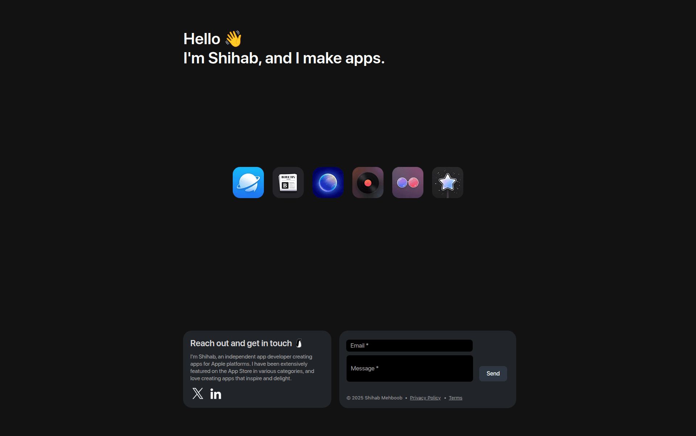
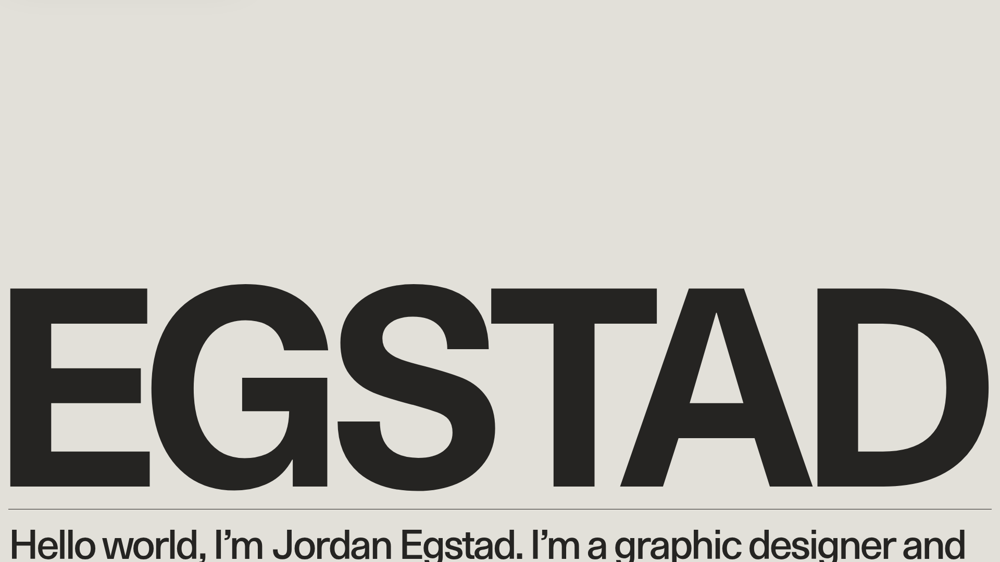
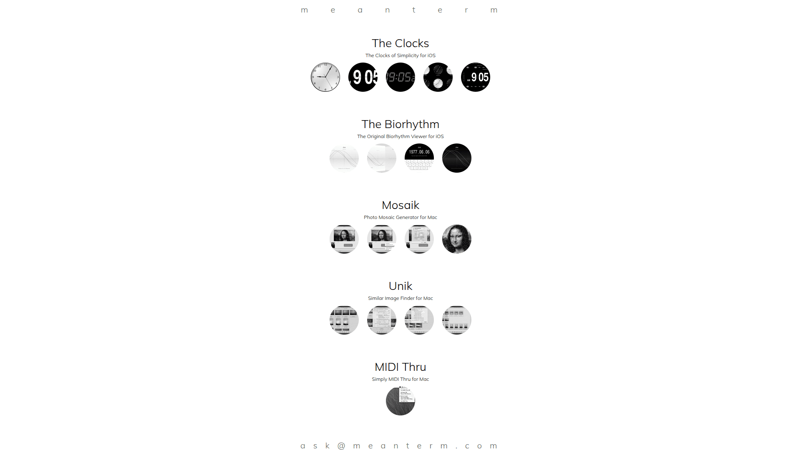
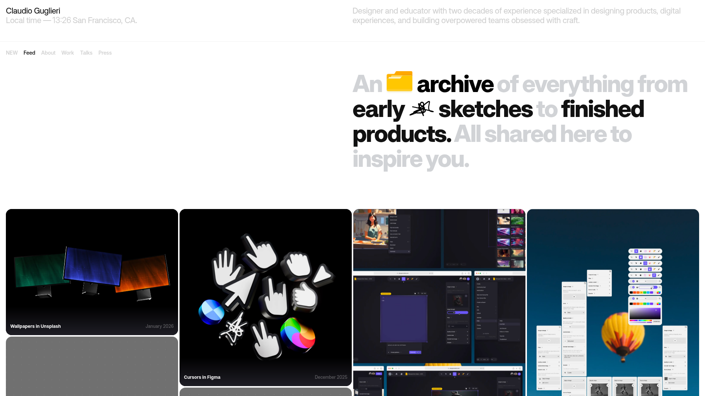
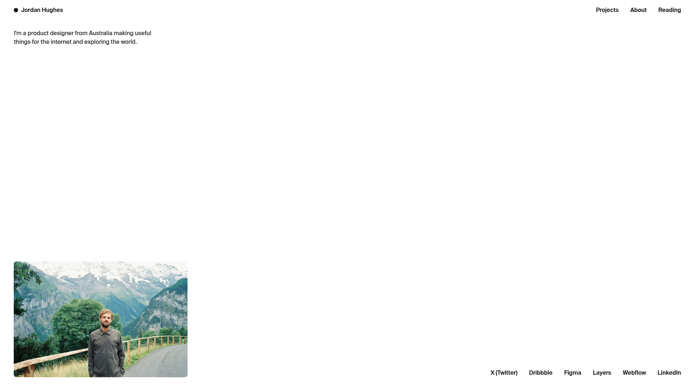
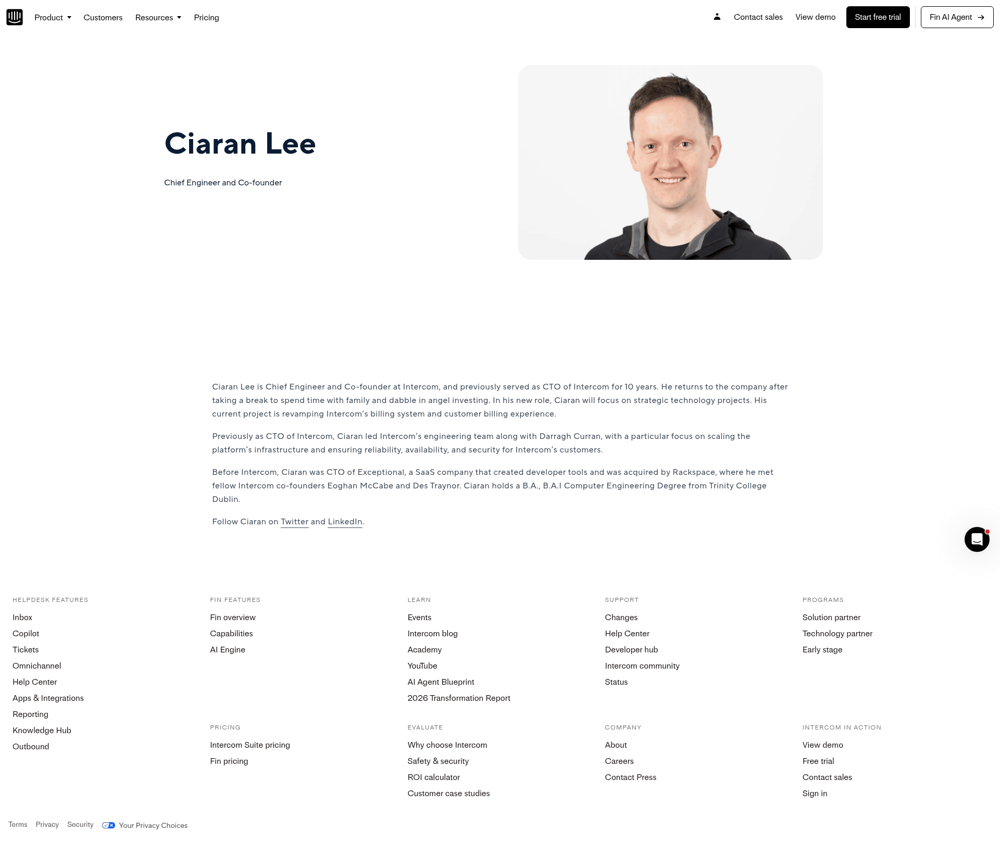

Audit

Right now the "vasudev menon" pill is so small it reads as a logo for the dock UI, not as the person behind the site. Three of the four most-similar references hit you with name + role within the first second.
Inspired by:

Hello 👋 / I'm Shihab, and I make apps. placed top-left in display weight. Lazyweb
data/profile.ts ("Design engineer building AI-native products…"). Move it onto the canvas itself, not behind a card click.┌──────────────────────────────────────────────────────────┐
│ vasudev menon [Canvas][Simple] │
│ design engineer · ai-native products │
│ │
│ ┌────┐ ┌────┐ ┌────┐ ┌────┐ ┌────┐ │
│ │ HL │ │ IN │ │ MB │ │ OC │ │ TA │ (experiences) │
│ └────┘ └────┘ └────┘ └────┘ └────┘ │
│ │
│ ┌─────────── DOCK ────────────┐ │
│ └─────────────────────────────┘ │
└──────────────────────────────────────────────────────────┘Keep the cute pill — but add the tagline beneath it in Instrument Serif italic to leverage the editorial font already in the scale.
The dock currently floats roughly mid-canvas. Anyone with a Mac expects a dock at bottom-center; placing it in the middle reads as "decoration that looks like a dock" instead of "the dock, your nav." It also fights the experience cards for vertical real estate.
┌──────────────────────────────────────────────────────────┐
│ vasudev menon → tagline │
│ │
│ experience row · projects · about │
│ │
│ (breathing room) │
│ │
│ ┌─[ DOCK · centered · floats ]─┐ │
└─────────────└────────────────────────────────┘──── 20px ─┘The five company cards read as a row of near-identical dark folders. The per-company colour theming (charcoalGrid, forest, royal, midnightDots, slate) is too subtle on first look — at thumbnail size most viewers can't tell them apart, so they don't bother scanning.
Inspired by:

The standalone projects (the polaroid scatter, the controller image, the dot-matrix video) are some of the most visually interesting content on the canvas — but they sit in the bottom-right corner at thumb size compared to the experience row. They read as decoration.
Inspired by:

A new visitor staring at the canvas right now has no signal that things are draggable, hoverable, or zoomable. The custom cursor flips on hover, but only after they've already moved their mouse over something — and most users skim with their eyes first. The Canvas / Simple toggle is the only visible affordance.
Inspired by:

Don't change these — they're what makes the site memorable:
#f4f0eb). Distinctive, calm, makes the site stand out from the wall of dark-mode portfolios.| Source | Pattern | Provenance | |
|---|---|---|---|
| pnguin.app | Top-left hello + name + role in display text | Lazyweb | |
| egstad.com | Name as massive type on warm cream background | Lazyweb | |
| jordanhughes.co | Single-line bio top-left, visible nav, person photo, social row | Lazyweb | |
| meanterm.com | Each project gets a full breathing row with distinct icons | Lazyweb | |
| guglieri.com | Work feed as hero with editorial tagline | Lazyweb | |
 | intercom.com/.../ciaran-lee | Founder profile with categorized content sections — alternative for a simpler default | Lazyweb |